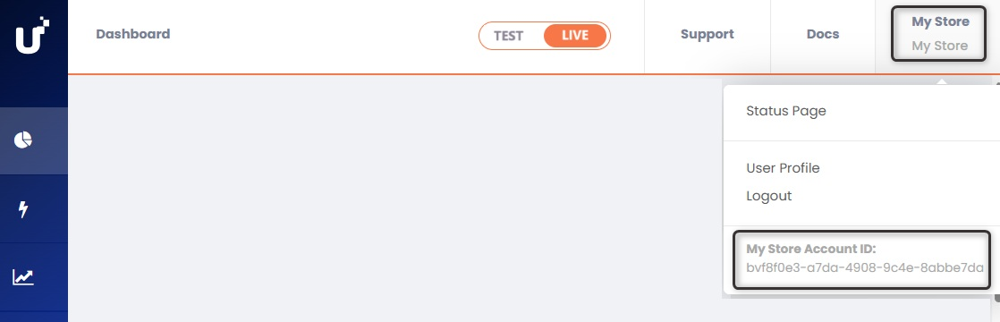

Salesforce Commerce Cloud
Salesforce Commerce Cloud (SFCC) is an enterprise-grade, cloud-based digital commerce platform that enables brands to deliver personalized and scalable shopping experiences. For more information, visit the official Salesforce Commerce Cloud website.
Benefits
Integrating the PayU cartridge offers the following advantages:
- Quick integration: Preconfigured components that accelerate development.
- Minimal technical effort: No complex coding required.
- Ongoing maintenance: PayU manages updates and improvements.
- PCI-DSS compliance: Ensures security and regulatory adherence.
- Comprehensive functionality: Supports card payments, cash, 3DS, refunds, and more.
- Built on SFRA: Fully aligned with Salesforce’s recommended architecture.
- Customizable setup: Select the payment methods and business rules that best suit your needs.
- Integrated insights: Direct access to transactional data within Salesforce.
Prerequisites
Before beginning the integration, ensure you have the following:
- An active PayU Latam account.
- An active PayU Enterprise (PaymentsOS) account in production/live mode. For details on how to enable live mode, refer to Activating Your PayU Enterprise Account.
- A Salesforce Commerce Cloud (Business Manager) instance with administrator access.
- Access to your SFCC store’s development environment, including permissions to install and configure cartridges.
- Access to the PayU cartridge repository.
Note
For testing this solution, you don’t need production credentials from PayU Latam or PayU Enterprise. Use the test credentials provided in Testing Your Solution. If testing with 3DSecure, refer to the credentials in Testing the 3DS Authentication. For account setup, see Setting Up Your PayU Enterprise Account.SFCC Compatibility
To ensure compatibility, note the following technical requirements and considerations:
- The cartridge is compatible with SFRA version 7.0.1 or later.
- You must install Node.js version 8.9.4 or later in your development environment.
Note
Before continuing, ensure your Salesforce environment is correctly configured. For assistance, refer to the official Salesforce documentation.Supported PayU Latam Features
The following table shows the availability of the PayU cartridge by country, along with the supported payment methods:
| Country | Payment Method Type | Payment Method Name in SFCC |
|---|---|---|
Argentina
|
Card | American Express, Argencard, Cabal, Cencosud, DINERS, Master Card, Naranja, Visa Notes: |
| Cash | COBRO_EXPRESS, PAGOFACIL, RAPIPAGO | |
Brazil
|
Card | American Express, Master Card, Visa |
| Cash | BOLETO BANCARIO | |
Chile
|
Card | American Express, Master Card, Visa |
Colombia
|
Card | American Express, DINERS, Master Card, Visa |
| Cash | BANK REFERENCED, EFECTY, OTHERS CASH Notes: |
|
Mexico
|
Card | American Express, Master Card, Visa |
| Cash | BANK REFERENCED, OXXO, OTHERS CASH MX, SEVEN ELEVEN Notes: |
|
| Bank Transfer | SPEI | |
Panama
|
Card | Master Card, Visa |
Peru
|
Card | American Express, DINERS, Master Card, Visa |
| Cash | PAGOEFECTIVO | |
| Digital Wallet | Yape |
Considerations
Review the following key considerations to ensure a smooth and compliant integration across supported countries.
- All countries support one-step or two-step payment processing: authorization and capture in a single request, or authorization and capture as separate steps. In Colombia, the two-step flow is only supported for MasterCard and Visa.
- The following financial operations are supported: Charge, Authorization, Capture, Void, and Refund.
- All countries support fraud analysis and PayU’s manual validation processes.
- Argentina, Brazil, Colombia, Mexico, and Peru support 3D Secure for MasterCard and Visa.
- Installment-based promotions—also known as interest-free months—are supported through routing conditions defined in the PayU Enterprise decision engine.
Initial Setup, Installation, and Configuration
This section outlines the necessary steps to properly install and configure the PayU cartridge on your SFCC site.
Activating Your PayU Enterprise Account
To get started, register on the PayU Enterprise (PaymentsOS) official website. Please provide your name, your company’s name and website, and the email address of the administrator user. Once you’ve completed the registration, you’ll receive an email to set your password. After that, you’ll be able to access the PayU Enterprise Control Center.
By default, new accounts are set to test mode. To enable live transactions, contact your account manager and submit a request with the following details:
- PayU Latam Merchant ID: Locate your LATAM account’s Merchant ID in the PayU Management Panel.
- PayU Enterprise Account ID: Find your Account ID in the PayU Enterprise control panel by clicking your username in the upper-right corner.

Setting Up Your PayU Enterprise Account
PayU Enterprise (PaymentsOS) connects your PayU Latam account with your Salesforce Commerce Cloud (SFCC) store.
To get started, you need to configure the following in your PayU Enterprise account:
- The PayU Latam payment provider
- Your business unit
- The webhook to receive notifications on your SFCC site
Note
Repeat the steps in the Configuring a Payment Provider, Configuring a Business Unit, and Configuring a Webhook sections for each of your sites and PayU Latam accounts.Configuring a Payment Provider
A payment provider instance in PayU Enterprise stores your PayU Latam payment processing credentials.
Follow these steps to configure a provider:
- In the PayU Enterprise Control Panel, select the TEST or LIVE environment at the top. Then navigate to Configurations > Providers, search for, and select the PayULatam provider.
- Fill in the following details to create the payment provider instance:
| Field | Description |
|---|---|
| Configuration Name | Enter a name for the provider configuration. e.g., “PayU Argentina”. |
| Description (Optional) | Optional description for the payment provider. e.g., “My payment provider in Argentina.” |
| apiLogin | Your PayU Latam username for the connection. |
| apiKey | Your unique PayU Latam merchant key for the connection. |
| accountId | Your PayU Latam account ID, based on your country of operation. |
| merchantId | Your PayU Latam merchant ID. |
| partnerId | Mandatory identifier for SFCC. Please use: ZOOZ-SALESFORCE. |
| paymentCountry | The processing country in ISO 3166 Alpha-3 format. e.g., ARG, BRA, CHL, COL, MEX, PAN, or PER. |
| multiCapture | Leave this field with its default setting. Do not modify it. |
| cashRedirect | Leave this field with its default setting. Do not modify it. |
The fields apiLogin, apiKey, accountId, and merchantId are different for each environment selected at the top of the control panel.
- For the TEST environment, use the credentials provided in Testing Your Solution. If you’re using 3DSecure, refer to the credentials in Testing 3DS Authentication.
- For the LIVE environment, you must obtain your credentials from the PayU Latam Control Panel. For more information, refer to How to Get the Integration Variables.
- Once you’ve completed the form, click Create to finish.
Configuring a Business Unit
A business unit links the provider configuration created in the previous section with your PayU Enterprise API credentials, enabling transaction processing on your Salesforce Commerce Cloud (SFCC) site.
Follow these steps to configure the business unit:
-
In the PayU Enterprise Control Panel, select the TEST or LIVE environment at the top. Then go to Settings > Business Units and click on Create Business Unit.
-
Fill out the following information:
| Field | Description |
|---|---|
| Business Unit Name | Must be lowercase and contain no spaces. Once created, the name cannot be changed, so make sure it is accurate. |
| Description (Optional) | Optional description for your business unit. |
In the option to select a default provider for the business unit, choose the provider configuration you created in the previous section. Then click Create.
- Once the business unit is created, the system will generate an Application ID, a Public API Key, and a Private API Key. These credentials are required to enable payment processing on your SFCC website. Be sure to save them, as you’ll need them in the Managing Custom Site Preferences step.
Configuring a Webhook
The webhook enables your site to receive automatic notifications from PayU whenever a transaction status changes. This is useful for updating pending payments in real-time, such as:
- Cash payments that are confirmed after being completed.
- Fraud verification checks before authorizing the payment.
- 3D Secure authentications that require a challenge from the bank.
- Refunds that remain pending and are later approved or rejected.
- Any other relevant updates.
To enable the webhook, follow these steps:
-
In the PayU Enterprise Control Panel, select either the TEST or LIVE environment at the top. Then go to Settings > Webhooks and click Create a Webhook Endpoint.
-
In the Webhook URL field, enter a URL under the following format:
<YourSiteURL>/PayU-Webhook. -
In the event table, enable the Create and Update events for the following financial operations: Authorization, Capture, Charge, Refund, and Void.
-
Under Associated Business Units, select the business unit you created in the previous section.
-
Finally, click Create to save your webhook.
Installing the PayU Cartridge on Your Site
To enable payment processing with PayU on your Salesforce Commerce Cloud (SFCC) site, you need to install and configure the PayU cartridge. This section guides you through the steps required to integrate the cartridge into the storefront codebase.
Note
To carry out this procedure, you should be familiar with Salesforce Commerce Cloud (SFCC) programming.-
Clone the
PayU-Cartridgesrepository and integrate it into your project codebase. -
Inside the
PayU-Cartridgesfolder, locate thepackage.jsonfile and ensure thepathsproperty correctly points toapp_storefront_base:
"paths": {
"base": "../storefront-reference-architecture/cartridges/app_storefront_base"
}
To do this, you’ll need to download the official Salesforce Commerce Cloud repository from GitHub. This requires:
- Two-Factor Authentication (2FA) enabled on your GitHub account.
- Logging in with your SFCC credentials.
- Following the access instructions provided in the SFRA Guide and SFCC Repository Access documentation.
-
Ensure you have Node.js version 8.9.4 or higher installed on your machine.
-
Open a terminal and navigate to the root of the repository. Run the following commands:
-
npm install -
npm run compile:js -
npm run compile:scss
Important
You must run these commands in the Salesforce Storefront Base repository before building the PayU cartridge.- In the same directory where you downloaded the source code, create a file named
dw.jsonwith the following structure:
{
"hostname": "your_sandbox_hostname", // Your sandbox server address.
"username": "your_username", // Your SFCC login username.
"password": "your_password", // Your SFCC login password.
"code-version": "version_to_upload" // Label you want to upload. e.g.: ”payu_latam”
}
Note
To sync your local environment with your cloud site, you can use the Prophet extension (for example:Clean Project / Upload All). Make sure the code-version in your dw.json file matches the one shown in Administration > Site Development > Code Deployment on your site.
Activating the Cartridge in Business Manager
You must add the PayU cartridge to the cartridges path of your site in Business Manager before proceeding with further configuration.
To activate the cartridge, follow these steps:
-
Log in to Business Manager.
-
Navigate to Administration > Sites > Manage Sites.
-
Click the name of your site.
-
Open the Settings tab.
-
In the Cartridges field, add the PayU cartridge name at the beginning of the path:
int_payu:app_storefront_base -
Click Apply.

Note
Repeat steps 3 through 6 for each site where you want to use the PayU cartridge.Configuring the Cartridge
This section outlines the setup process for the PayU cartridge.
Importing Metadata with a Single Site Import
All required metadata for the PayU integration is located in the metadata at the root of the cartridge package downloaded from GitHub. This folder includes essential configuration elements such as:
- Custom Preferences
- Job Definitions
- Service Configurations
- Country-Specific Settings
Note
The cartridge package is the file downloaded from GitHub. The relative path is:link-payu-master/metadata.
Follow the steps below to import the metadata:
-
Open the
metadatafolder from the repository. -
Open the
jobs.xmlfile. -
Update the
site-idvalue in each job with your site’s ID. You can find your site ID in Business Manager > Administration > Sites > Manage Sites.

Make sure to update the ID in all jobs. Here’s an example for reference:
<job job-id="PAYU_CAPTURE_PAYMENT">
<description />
<parameters />
<flow>
<context site-id="payu-argentina" />
-
Inside the
metadata/sitesfolder, rename the subdirectorypayu-countryto match your site’s ID. -
Compress the
metadatafolder into a.zipfile. -
Log in to Business Manager and go to Administration > Site Development > Site Import & Export.
-
Choose the
.zipfile you just created, click Upload, and upload the file.

- Once uploaded, select the file and click Import.
After a successful import, all PayU configurations will be available according to your account.
- To verify, go to Site > Ordering > Order, open any order, switch to the Attributes tab, and confirm that the data has been imported correctly.
Important
Successful metadata import is critical for the PayU integration to work as expected. After the import is completed, verify the imported values in Business Manager > Administration > Site Development > Import & Export.Managing Custom Site Preferences
To manage the custom site preferences for PayU:
-
Log in to Business Manager and navigate to Site > Merchant Tools > Site Preferences > Custom Preferences.
-
Click on the preference group with the ID
payu.

You will need the PayU Enterprise credentials generated in the Configuring a Business Unit section.
- Edit the attributes according to your PayU account configuration.
| Preference | Description | Default Value | ||||||||||||||
|---|---|---|---|---|---|---|---|---|---|---|---|---|---|---|---|---|
payUPublicKey |
Public key from your PayU Enterprise business unit. Required for authentication. | – | ||||||||||||||
payUPrivateKey |
Private key from your PayU Enterprise business unit. Required for authentication. | – | ||||||||||||||
payUAppId |
App ID from your PayU Enterprise business unit. Required for authentication. | – | ||||||||||||||
payUProvider |
Provider configured in your PayU Enterprise account. | PayULatam |
||||||||||||||
payUApiVersion |
PayU API version. | 1.3.0 |
||||||||||||||
payUCountry |
Country where the integration processes the payments (ARG, BRA, CHL, COL, MEX, PAN, PER). Must match the country of your merchant account for proper localization and processing. |
Country-specific | ||||||||||||||
payULanguage |
Language that the integration uses in emails and error messages (options: English, Spanish, Portuguese). Included in request payloads to generate localized receipts and messages. Optional feature for PayU Latam. |
English |
||||||||||||||
payUEnvironment |
Defines the PayU environment to use (Test or Live). |
Test |
||||||||||||||
payUPaymentFlowType |
Type of payment flow: • One Step (Charge): Authorization and capture in a single request. • Two Step (Authorization & Capture): Separate steps for approval and capture. |
One Step (Charge) |
||||||||||||||
enableImmediateCapture |
For Two Step flow, controls if capture happens immediately after authorization. • Yes: Capture immediately.• No: Use the scheduled PAYU_CAPTURE_PAYMENT job. |
Yes |
||||||||||||||
payUVoidAllowed |
Enables or disables the option to void payments. | No |
||||||||||||||
payUSupportedDocumentTypes |
Defines supported document types for checkout in valid JSON format, per country. These must adhere to country-specific formats. Documents are validated with a 20-character limit, with some exceptions: for instance, DNI in Peru must be 8 digits, and CPF in Brazil must be 11 digits (e.g., 123.123.123-12), while CNPJ in Brazil must be 14 digits. For more information, refer to the Document Types documentation. Example: { “ARG”: [{ “type”: “DNI”, “description”: “Documento Nacional de Identidad”, “value”: “DNI”, “enabled”: true }, { “type”: “CI”, “description”: “Cédula de Identidad”, “value”: “CI”, “enabled”: true }, { “type”: “CUIL”, “description”: “Código Único de Identificación Laboral”, “value”: “CUIL”, “enabled”: true }, { “type”: “CUIT”, “description”: “Código Único de Identificación Tributaria”, “value”: “CUIT”, “enabled”: true }, { “type”: “OTHER”, “description”: “Otro”, “value”: “”, “enabled”: true }, { “type”: “DNIE”, “description”: “Documento Nacional de Identidad - Electrónico”, “value”: “DNIE”, “enabled”: false }, { “type”: “LC”, “description”: “Libreta Cívica”, “value”: “LC”, “enabled”: false }, { “type”: “LE”, “description”: “Libreta de Enrolamiento”, “value”: “LE”, “enabled”: false }]} Note: Ensure the value is valid JSON. |
Country-specific | ||||||||||||||
payUEnableInstallments |
Enables or disables installment payments at checkout. • Enabled: Users can select installments. • Disabled: Installment selection is hidden. |
No |
||||||||||||||
payUCardWiseInstallments |
Allowed installments by card type in JSON format. Example: { “ARG”: { “Amex”: [1,3,6,9,12,18], “Argencard”: [1,3,6,9,12,18], “Cabal”: [1,3,6,9,12,18], “Cencosud”: [1,3,6,9,12,18], “Diners”: [1,3,6,9,12,18], “Master Card”: [1,6,12,18], “Naranja”: [1,6,12], “Visa”: [1,3,6,9,12,18] }} Note: Ensure the value is valid JSON. |
Country-specific | ||||||||||||||
payUInstallments |
Configures the number of allowed installments for credit card payments at a general site level. | Country-specific | ||||||||||||||
payu3DSConfiguration |
Controls the use of 3D Secure authentication: • Enable: Enforce 3DS for all eligible transactions. • Disable: Do not use 3DS. • Internal: PayU decides based on risk analysis. |
DISABLED |
||||||||||||||
payUCashExpiryDays |
Number of days before cash payments expire. Default values per country:
|
7 |
Changing the Cartridge Properties Language
To change the checkout language, you must configure the locales before uploading the cartridge to your site. This process involves some SFCC locale setup, which may take time. Please refer to the official Salesforce documentation for configuring locales.
As a temporary workaround, you can rename the property files directly within the PayU cartridge. Follow these steps:
- Navigate to the PayU cartridge path:
link_payu/cartridges/int_payu/cartridge/templates/resources - In this folder, locate the
.propertiesfiles that define various text strings. - Edit or customize these files as needed. For example, to use a Spanish (Peru) file, locate
account_es_PE.properties, rename it toaccount.properties. - Apply this same renaming convention to all other relevant property files.
- Once you have completed this, you can proceed with the installation on your site.
Important
This temporary solution is only viable for sites built from scratch with no existing customizations. If your SFCC site is already live or has custom implementations, developers will need to integrate these changes carefully to ensure compatibility with their existing code.Verifying Your Payment Processors
Once you’ve uploaded the metadata file, the payment processor details are updated automatically. Next, verify that the processors are correctly configured:
- In Business Manager, select the site you want to configure.
- Go to Merchant Tools > Ordering > Payment Processors.
- Confirm that the PayU processors appear in the list.
Enabling the Payment Methods
The integration package includes a definition of payment methods in the payment-methods.xml file, located in the metadata folder you previously imported. To enable them:
- Go to Merchant Tools > Ordering > Payment Methods.
- Enable the payment methods you want to offer.

In the Manage Credit/Debit Cards window you can enable the card franchise you wish to accept.
All card-related fields on this screen are used to configure specific validations.
| Card Attribute | Description |
|---|---|
| Security Code Length | Maximum length of the security code, based on the card type. |
| Card Number Verification | BIN numbers or ranges used to validate the card. Example: 622126–622925 or 5018, 5020, 5038. |
| Card Number Length | Allowed length of the card number (usually between 13 and 16 digits). |
| Checksum Verification | Indicates whether a checksum validation is applied. Possible values: Yes or No. Note: In Argentina, disable validation for the Naranja card. |
You can also configure minimum and maximum payment amounts by payment method.
Please refer to the following limits for cash payments:
| Country | Alternative Payment Method | Minimum Amount | Maximum Amount |
|---|---|---|---|
|
Argentina
|
COBRO_EXPRESS | $5 ARS | $60,000 ARS |
| PAGOFACIL | $5 ARS | $200,000 ARS | |
| RAPIPAGO | $5 ARS | $500,000 ARS | |
|
Brazil
|
BOLETO BANCARIO | $1.00 BRL | $10,000.00 BRL |
|
Colombia
|
BANK REFERENCED | $1.00 COP | – |
| EFECTY | $20,000.00 COP | $6,000,000.00 COP | |
| OTHERS CASH | $1,000.00 COP | $4,000,000.00 COP | |
|
Mexico
|
BANK REFERENCED | $1.00 MXN | – |
| OXXO | $1.00 MXN | $10,000.00 MXN | |
| OTHERS CASH MX | $1.00 MXN | $10,000.00 MXN | |
| SEVEN ELEVEN | $1.00 MXN | $10,000.00 MXN |
Granting Webhook Access to Orders
Before proceeding with this configuration, make sure you’ve completed the PayU Enterprise Configuring a Webhook section.
Ensure that the webhook controller has access to the order object. To do this:
- Go to Merchant Tools > Site Preferences > Order.
- Set the Limit Storefront Order Access field to Allow List.
- In the text field, enter:
PayU-Webhook.
Important Considerations
Before going live, review the following points to ensure proper configuration and avoid issues with webhook communication and order processing.
- If this configuration is not applied correctly, webhook requests from PayU will reach the controller but will not have permission to update the orders. This can result in critical errors when updating order statuses and processing payments.
- After completing the setup, make a test payment to confirm that webhook notifications are being received properly. This step is essential to ensure that the integration is working as expected.
- If your setup includes multiple storefronts across different countries, be sure to validate this configuration for each site individually, using the corresponding URL for each.
Verifying the Service Configuration
To verify that the PayU HTTP service (https.payment.payu) is properly configured in Business Manager, navigate to Administration > Operations > Services.
Configuring the Jobs
PayU provides several jobs to automate key tasks related to payment processing. The jobs.xml file included in the cartridge defines the available jobs.
Below is a summary of the available jobs.
| Job Name | Description |
|---|---|
| PAYU_CAPTURE_PAYMENT | Captures the payment when the enableImmediateCapture preference is disabled and the site uses a two-step payment flow (authorization and capture). |
| PAYU_PARTIAL_REFUND | Processes partial payment refunds. |
| PAYU_REFUND | Processes a full refund for a specific order. The order ID must be set in the job step. |
| PAYU_VOID (ORDER_SPECIFIC) | Voids the payment of a specific order. The order ID must be set in the job step. |
Assigning Jobs to a Single Site
Make sure to assign the jobs to each of your sites. To do this:
- In Business Manager, go to Administration > Operations > Jobs.
- Verify that all jobs are properly configured and listed.

From this screen, you can:
- Check if the jobs are enabled.
- View the last execution, its status, priority, and scope.
- Delete jobs if necessary.
To enable or disable a job, change its schedule, or modify other settings, click on the specific job.
Example:

Ensure each job is linked to the appropriate site. For instance, if the site is payu-argentina, the job will run for Argentina and process authorizations for that country only.
Assigning Jobs to Multiple Sites
If you manage multiple storefronts across different countries, set up a separate job for each site with a unique job ID. This ensures capture, refund, and void operations are handled correctly per site.
To enable any PayU job for a specific site (e.g., PAYU_CAPTURE_PAYMENT for Brazil):
- Go to Administration > Operations > Jobs and click New Job.
- Enter a unique job ID using the format:
[JOB_NAME]_[SITE_ID_COUNTRY].
- Example Job IDs:
PAYU_CAPTURE_PAYMENT_BRAZILPAYU_PARTIAL_REFUND_ARGENTINAPAYU_REFUND_MEXICOPAYU_VOID_COLOMBIA
- Provide a clear, relevant description for the job and then click Create.
- Open the Job Steps section and click Configure a Step.
- Search for and select the corresponding custom step ID:
- For
PAYU_CAPTURE_PAYMENT:custom.payuPaymentCapture - For
PAYU_PARTIAL_REFUND:custom.payuPartialRefund - For
PAYU_REFUND:custom.payuRefund - For
PAYU_VOID:custom.payuPaymentVoid
- Assign the selected step ID and click Assign.
- Set the site scope to the corresponding country/site to ensure the job runs only on that specific storefront.
Running Payment Jobs
This section explains how to execute each job correctly, including the required parameters and configuration tips to ensure proper functionality.
PAYU_CAPTURE_PAYMENT Job
This job captures previously authorized payments when the site uses a two-step payment flow (Authorization and Capture as separate steps).
To use this job, ensure that your preferences for payUPaymentFlowType and enableImmediateCapture are configured as follows:
This job scans all orders with a payment status of “Authorized” and attempts to capture them. The results of each execution are recorded in the job logs.
Execution Steps
- Go to Administration > Operations > Jobs.
- Select PAYU_CAPTURE_PAYMENT from the job list.
- Complete the parameter fields according to your requirements.
- Note that the ID parameter is mandatory for this job:
custom.payUPaymentCapture
- Note that the ID parameter is mandatory for this job:
- Define the execution frequency (e.g., every hour).
- Enable or disable the job as needed.

PAYU_PARTIAL_REFUND Job
This job allows you to manually issue partial refunds by specifying the amount to be returned.
Important Considerations
- The payment status must be “Captured”.
- The refunded amount must not exceed the total amount captured for the order.
Execution Steps
-
Go to Administration > Operations > Jobs.
-
Select PAYU_PARTIAL_REFUND from the job list.
-
Click on Job Steps and select
custom.payUPartialRefund. -
Fill in the following parameter fields:
- ID:
custom.payUPartialRefund - orderId: ID of the order to be refunded.
- amount: Amount to be refunded.
- (Optional) refundReason: Explanation for the refund (useful for audit purposes).
- ID:
Then, click Assign.

- Click Run Now to execute the job. You can use the Refresh button to update the job history.

PAYU_REFUND Job
This job refunds the full payment amount for a specific order.
Important Considerations
- This job is only applicable if the payment status is “Captured”.
- The refund will be for 100% of the paid amount.
Execution Steps
-
Go to Administration > Operations > Jobs.
-
Select PAYU_REFUND from the job list.
-
Click on Job Steps and select
custom.payURefund. -
Fill in the following parameter fields:
- ID:
custom.payURefund - orderId: ID of the order to be refunded.
- (Optional) refundReason: Explanation for the refund (useful for audit purposes).
- ID:
Then, click Assign.
- Click Run Now to execute the job. You can use the Refresh button to update the job history.
PAYU_VOID (ORDER_SPECIFIC) Job
This job is used to void an authorized payment before it has been captured.
Important Considerations
- This job can only be executed if the payment status is “Authorized”.
- Payments that have already been captured cannot be voided.
- The site must be configured to use the two-step payment flow (Authorization and Capture separately).
- To use this job, the
payUPaymentFlowType,enableImmediateCapture, andpayUVoidAllowedfields must be set as follows:

Execution Steps
-
Go to Administration > Operations > Jobs.
-
Select PAYU_VOID (ORDER_SPECIFIC).
-
Click on Job Steps and select
custom.payUPaymentVoid. -
Fill in the following parameter fields:
- ID:
custom.payUPaymentVoid - orderId: ID of the order with the authorized payment.
- ID:
Then, click Assign.

- Click Run Now to execute the job. You can use the Refresh button to update the job history.
Enabling or Disabling the PayU Integration
You can temporarily disable or re-enable the PayU payment integration depending on your business needs. The steps below guide you through updating the payment method configurations in Business Manager to either deactivate or reactivate PayU as a payment processor.
Disabling PayU Integration:
- Go to Merchant Tools > Ordering > Payment Methods.
- Disable all payment methods associated with PayU.
- Check each payment method to see which payment processor it uses:
- Click on a payment method (e.g.,
CREDIT_CARD) and review the assigned processor. - If the processor is set to
PAY_U, replace it with another one, such asBASIC_CREDIT.
- Click on a payment method (e.g.,
- Enable the payment methods you want to use with the new processor.
Re-Enabling PayU Integration:
Switch the processors back to PAY_U for the corresponding payment methods.
Testing the Integration
Once you have completed the initial setup, installation, and configuration steps, we strongly recommend testing your integration before processing real transactions.
Prerequisites
- Ensure that the
payUEnvironmentpreference is set to Test mode. - Configure the preferences according to the payment flow and payment methods you want to test.
- Use the appropriate
payUPublicKey,payUPrivateKey, andpayUAppIdcredentials for the testing environment. These can be found under Configuring a Business Unit. - After completing your tests, update the preferences with your production credentials.
Running a Test Transaction
- Log in to Business Manager in Salesforce Commerce Cloud and select your site from the dropdown menu.

- Select your Storefront.

- Your configured Storefront will open. Choose any product and proceed to checkout.

- On the payment page, the available payment methods will be displayed. Select the one you want to test and enter the test data. You can find test card numbers and other relevant information in the Test Cards documentation. Complete the order and payment.

Verifying a Transaction
Once the purchase is approved, you can verify the transaction in the following places:
- In SFCC Business Manager go to Merchant Tools > Ordering > Orders and search for the order you just placed.

The selected order will display full payment information processed through PayU, including transaction status, payment method, authorization details, and other relevant data. This ensures transparency and allows you to track each transaction.


- In PayU Enterprise, go to Payments > Search and look up the transaction.
Debugging the Checkout with PayU
If you receive a declined transaction during testing, you can identify the reason as follows:
1) Checking Logs in Business Manager
Check the logs to find relevant transaction data. To do this:
- Go to Request Log (top left corner).
- Search for the request related to the payment attempt.
- Scroll to the bottom of the log to view the error message or rejection reason returned by PayU.
2) Verifying Order Attributes
Review the order attributes to double-check for any inconsistencies. To do this:
- Open the order via Merchant Tools > Orders > Search.
- In the Attributes tab, review the API response from PayU.
3) Checking the Payment Summary
Review the payment summary to verify the transaction details. To do this, open the order and navigate to the Payment tab. There, you’ll find a summary of the payment attempt, including its status and any key messages.

Troubleshooting PayU Job Errors
If you receive an error status while running a PayU job, you can gather more information by following these steps:
- Navigate to Business Manager > Administration > Operations > Jobs.
- Select the failed job from the list (e.g.,
PAYU_REFUND). - Click on the History tab.
- Select the failed execution entry.
- Click the Log File icon to download the log file.
- Inside the log, look for the response from PayU or the returned error message.
This information can help you identify whether the issue is related to:
- Incorrect credentials
- Invalid operation for the order
- Invalid order status
- Incorrect amount
- Connection failure
Enabling Installment Promotions
Through this integration, you can offer promotional installments or interest-free months (MSI) to your end customers, based on rules defined in the PayU Enterprise decision engine.
Prerequisites
-
Mirror account enabled:
You must request PayU Latam to create an additional mirror account for your merchant. This account should have only the payment methods enabled that are applicable for MSI or promotional installments. -
Provider configured in the PayU Enterprise control panel for your mirror account:
You need to register an additional provider in the PayU Enterprise control panel, using the credentials of your mirror account. Follow the same steps used to configure the provider for your main account in Configuring a Payment Provider.
Configuring a Decision Engine
Define the rules that will be applied to route transactions to either your main account or the mirror account enabled for interest-free months or promotional installments by following these steps:
- Open the PayU Enterprise control panel.
- In the left-hand menu, select Decision Engine.
- Choose the Business Unit associated with the site where you currently process payments and want to offer promotions.
- From the Optimize Your Payment Flow section, select Payment Routing.
Note
At the bottom of this section, under Default Provider, you should see the provider configuration associated with your main PayU Latam account.- Add a new routing decision.
You will need to enter:- A name for the routing decision.
- The conditions that will allow PayU to route transactions to the PayU Latam account enabled for processing promotions or interest-free installments.
- A required condition, for example:
Transaction Additional Details Key: number_of_installmentsValue type: StringEquals: Enter the desired number of installments
Note
In this example, the configuration ensures that only transactions requesting a specific number of installments (e.g., 3, 6, 12) are routed to the mirror account configured for promotional plans.You may add additional conditions as needed to refine validation and avoid misrouting, including additional filters such as:
- Card Brand
- Card Issuing Country
- Card Type
- Card Issuer or BIN
- Payment Currency
- Payment Amount
These helps identify eligible transactions and apply the installment promotion only when all defined criteria are met.
The routing decision will be triggered when a transaction meets the criteria defined for the promotion, as agreed with your PayU Latam account manager.
The routing decision could look like this:
Important
-
The routing decision is considered valid when all conditions are satisfied during the transaction request. These rules should align with the agreement you have in place with your PayU Latam account manager.
-
Ensure that the preferences
payUInstallmentsandpayUCardWiseInstallmentsare aligned with the installment options you want to offer as set in Managing Custom Site Preferences. These preferences must be properly configured for both your main account transactions and your interest-free or promotional installment options.